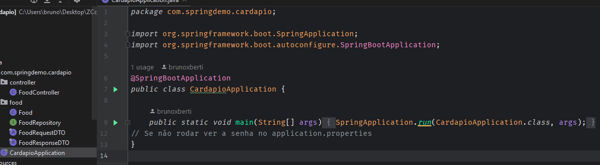
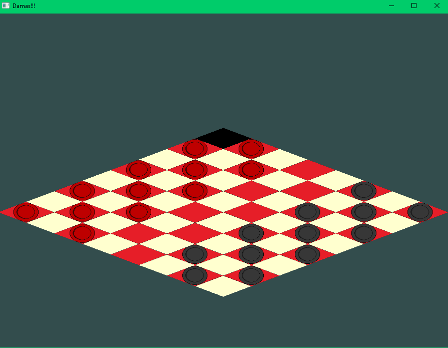
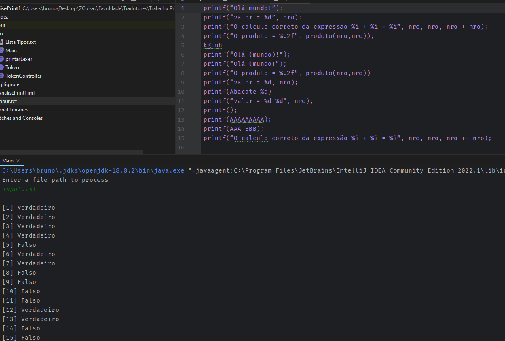
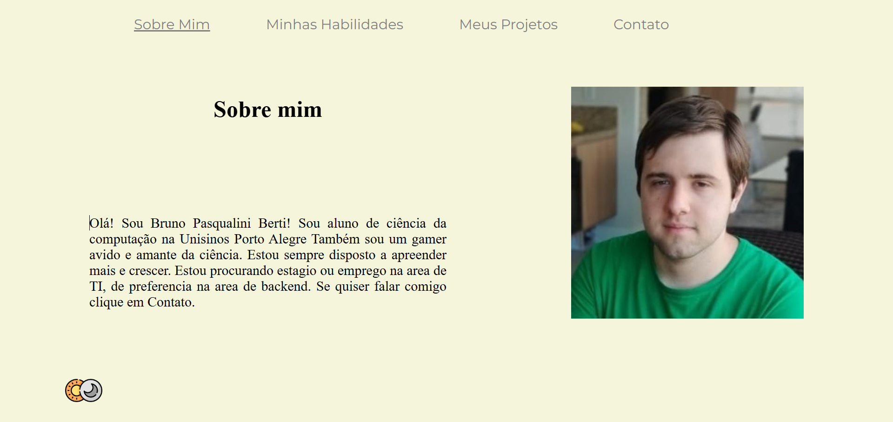

Backend do site de cardapio
O meu grupo fez um site para cardapio de churrascaria. Enquanto outros membros faziam o frontend em Angular. Eu fiz o Backend usando Java com SpringBoot e uma conexão à Postgres

Damas Isometricas
Eu, com a ajuda de um colega recriamos o jogo de damas com uma perspectiva Isometrica. Utilizamos nada além do c++ com uma biblioteca de OpenGl

Parser de Printf
Um simples programa para detectar se um comando "printf" do C está escrito de forma correta. Feito com Java e JFlex

Este site
Este site, além de apresntar meu curriculo em um formato facil de ler, ainda é uma grande demonstração da minhas habilidades em css, Html e Javascript